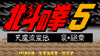
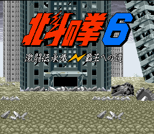
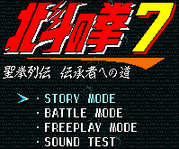

SNES Games - Hokuto no Ken

Controls
- A button: Open Menu/Confirm
- B button: Cancel
- X button: Cancel
- Y button: Open Menu/Confirm
- L button: Open Menu/Confirm
- R button: Cancel
- Start: Start the Game
- Select: [not used]
This is a typical Japanese RPG similar to Final Fantasy 2. In the game, you are the guy dressed in green who
has to find his kidnapped girlfriend. During your journey, various characters such as Ken Shiro, Rei, Toki and others
will join your party. Like the anime series, one of the best parts of the game is the battle mode; every character fights
with martial arts moves. When you defeat an enemy, he will explode. By increasing your level, you will learn new
techniques ranging from super attack combos to healing magic. -- from Matteo Fancellu

Controls
- A button: Punch
- B button: Kick
- X button: Jumping Kick
- Y button: Punch
- L button: [not used]
- R button: [not used]
- Start: Pause
- Select: [not used]
This is a typical Street Fighter game. By holding down the R button, you can charge up your super
meter. You have to stand still while doing this; but when it's full you can press a button to unleash a super move. Also,
you can do instant supers by pressing the L button. This doesn't always work, and I can't tell what the conditions
for using it are, but I do know that the seemingly invulnerable character can only be beaten if you first disable his power
with one of these super moves, after which he takes damage normally. -- from Dan Mastriani
Super moves can be done when you get enough continuous hits, and the meter in the middle charges to full. Then you
will see yourself surrounded by a purple (or yellow if charges full for 2 times in a row) aura. When that happens, press
L button to unleash super move. The super you use depends on the aura you have. -- from Poon Jacob Tin Hang

Controls
- A button: Kick
- B button: Kick
- X button: Punch
- Y button: Punch
- L button: Power-up
- R button: Ki Attack
- Start: Pause
- Select: [not used]
This is a typical Street Fighter game. Underneath your life meter is a ki meter. The ki attack you release is based
on how much energy is in the ki meter. You can also press the L button to change some of your ki energy into
life energy. There is a story mode, VS mode, and a freeplay mode where you can practice your moves.
© 1997 - Luis A. Cruz